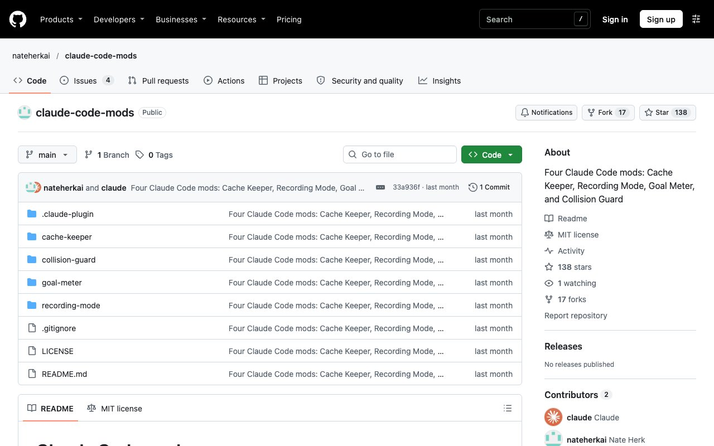

클로드 코드 모드 4종 — 캐시·목표·충돌·녹화
- 클로드 코드 안에서 도는 무료 플러그인(모드) 4개예요(MIT). 프롬프트 위에 정보를 띄우고 새 명령어를 더해 줘요.
- 캐시 키퍼는 큰 대화의 캐시 비용을, 골 미터는 /goal 진행률을, 콜리전 가드는 창 두 개의 같은 파일 수정을, 레코딩 모드는 녹화 중 개인정보를 맡아요.
- 필요한 것만 골라 깔면 돼요. 마켓 추가 한 줄 + 모드마다 설치 한 줄이에요.

claude plugin marketplace add nateherkai/claude-code-mods
claude plugin install cache-keeper@nateherk-mods
claude plugin install goal-meter@nateherk-mods
claude plugin install collision-guard@nateherk-mods
claude plugin install recording-mode@nateherk-mods
모드는 앤트로픽이 계정마다 차례로 켜 주고 있어요. 레코딩 모드는 화면만 가리고 저장된 내용은 그대로라, 올리기 전에 녹화본을 꼭 다시 보세요.